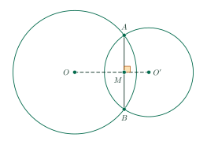
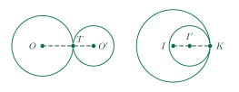

Relative Positions of Two CirclesVị trí tương đối của hai đường tròn
Grade 9 · Topic: CirclesLớp 9 · Chủ đề: Đường tròn
1Lesson IntroductionGiới thiệu bài học
Learning goalsMục tiêu bài học
By the end of this lesson you can:
Sau bài học này, em có thể:
name the five relative positions of two circles;
nhận biết được các vị trí tương đối của hai đường tròn;
decide the position by comparing \(d\) with \(R+r\) and \(R-r\);
xác định được vị trí tương đối nhờ so sánh \(d\) với \(R+r\) và \(R-r\);
find a radius or a distance for given tangency;
tìm được bán kính hoặc khoảng cách để hai đường tròn tiếp xúc;
solve real-life problems (fountains, gears, flower beds).
giải được bài toán thực tế (đài phun nước, bánh răng, bồn hoa).
2Mathematical VocabularyTừ vựng Toán học
distance between the centers – \(d=OO^{\prime}\).
Đoạn nối tâm – \(d=OO^{\prime}\).
intersecting circles – two common points; common chord \(AB\).
Hai đường tròn cắt nhau – có hai điểm chung; dây chung \(AB\).
externally / internally tangent – one common point, \(d=R+r\) / \(d=R-r\).
Tiếp xúc ngoài / tiếp xúc trong – một điểm chung, \(d=R+r\) / \(d=R-r\).
outside each other / one inside the other – no common point.
Ở ngoài nhau / đựng nhau – không có điểm chung.
collinear – on one straight line (the centers and the point of tangency).
Thẳng hàng – cùng nằm trên một đường thẳng (hai tâm và tiếp điểm).
3Useful English PhrasesCụm từ tiếng Anh thường gặp
Let \(d\) be the distance between their centers.
Gọi \(d\) là khoảng cách giữa hai tâm.
Compare \(d\) with \(R+r\) and \(R-r\) before drawing a conclusion.
So sánh \(d\) với \(R+r\) và \(R-r\) trước khi kết luận.
Since \(R-r\lt d\lt R+r\), the circles intersect at two points.
Vì \(R-r\lt d\lt R+r\) nên hai đường tròn cắt nhau tại hai điểm.
The two centers and the point of tangency are collinear.
Hai tâm và tiếp điểm thẳng hàng.
The line of centers is perpendicular to the common chord.
Đường nối tâm vuông góc với dây chung.
4Prerequisite ReviewÔn tập kiến thức nền
Lesson 16. A line and a circle: compare \(d\) with \(R\).
Bài 16. Đường thẳng và đường tròn: so sánh \(d\) với \(R\).
Perpendicular bisector. Points equidistant from \(A\) and \(B\) lie on the perpendicular bisector of \(AB\).
Đường trung trực. Điểm cách đều \(A\) và \(B\) thì nằm trên đường trung trực của \(AB\).
5TheoryLý thuyết
5.1 Five relative positionsCác vị trí tương đối của hai đường tròn
Let \((O;\,R)\) and \((O^{\prime};\,r)\) with \(R\ge r\), and \(d=OO^{\prime}\).
Cho hai đường tròn \((O;\,R)\) và \((O^{\prime};\,r)\) với \(R\ge r\), \(d=OO^{\prime}\).
| PositionVị trí tương đối | Common pointsSố điểm chung | RelationHệ thức |
|---|---|---|
| intersectingcắt nhau | 2 | \(R-r\lt d\lt R+r\) |
| externally tangenttiếp xúc ngoài | 1 | \(d=R+r\) |
| internally tangenttiếp xúc trong | 1 | \(d=R-r\gt0\) |
| outside each otherở ngoài nhau | 0 | \(d\gt R+r\) |
| one inside the otherđựng nhau | 0 | \(d\lt R-r\) |
Concentric circles (\(d=0\)) are a special case of “one inside the other”.
Hai đường tròn đồng tâm (\(d=0\)) là trường hợp đặc biệt của hai đường tròn đựng nhau.
5.2 Line of centersTính chất đường nối tâm

PropertiesTính chất
If two circles intersect at \(A\), \(B\), the line of centers \(OO^{\prime}\) is the perpendicular bisector of the common chord \(AB\) (because \(OA=OB\) and \(O^{\prime}A=O^{\prime}B\)).
Nếu hai đường tròn cắt nhau tại \(A\), \(B\) thì đường nối tâm \(OO^{\prime}\) là đường trung trực của dây chung \(AB\) (vì \(OA=OB\), \(O^{\prime}A=O^{\prime}B\)).
If two circles are tangent at \(T\), then \(O\), \(O^{\prime}\), \(T\) are collinear.
Nếu hai đường tròn tiếp xúc nhau tại \(T\) thì \(O\), \(O^{\prime}\), \(T\) thẳng hàng.

StrategyCách làm
Compute \(R+r\) and \(R-r\) first, then place \(d\) relative to these two numbers.
Tính \(R+r\) và \(R-r\) trước, rồi xem \(d\) nằm ở đâu so với hai số đó.
6Worked ExamplesVí dụ có lời giải
ExampleVí dụ 1RememberingNhận biết – Five casesNăm trường hợp
Two circles have radii 7 cm and 3 cm. Give their relative position and the number of common points when \(d\) is
a) 12 cm;
b) 10 cm;
c) 6 cm;
d) 4 cm;
e) 2 cm.
Hai đường tròn có bán kính 7 cm và 3 cm. Nêu vị trí tương đối và số điểm chung khi \(d\) bằng
a) 12 cm;
b) 10 cm;
c) 6 cm;
d) 4 cm;
e) 2 cm.
Analysis: \(R+r=10\), \(R-r=4\).
Phân tích: \(R+r=10\), \(R-r=4\).
a) \(12\gt10\): outside each other, 0 points.
b) \(d=10\): externally tangent, 1 point.a) \(12\gt10\): ở ngoài nhau, 0 điểm chung. b) \(d=10\): tiếp xúc ngoài, 1 điểm chung.
c) \(4\lt6\lt10\): intersecting, 2 points. d) \(d=4\): internally tangent, 1 point. e) \(2\lt4\): one inside the other, 0 points.
c) \(4\lt6\lt10\): cắt nhau, 2 điểm chung. d) \(d=4\): tiếp xúc trong, 1 điểm chung. e) \(2\lt4\): đựng nhau, 0 điểm chung.
0; 1; 2; 1; 0 common points.
Lần lượt 0; 1; 2; 1; 0 điểm chung.
ExampleVí dụ 2UnderstandingThông hiểu – Two circular fountainsHai đài phun nước
Two circular fountains have radii 6 m and 4 m; their centers \(A\), \(B\) are 8 m apart.
a) Give the relative position.
b) How far must the smaller fountain move directly away from \(A\) to be externally tangent?
c) From the original position, how far must it move directly towards \(A\) to be internally tangent?
Hai đài phun nước hình tròn có bán kính 6 m và 4 m, hai tâm \(A\), \(B\) cách nhau 8 m.
a) Nêu vị trí tương đối.
b) Phải dời đài nhỏ thẳng ra xa \(A\) bao nhiêu mét để hai đường tròn tiếp xúc ngoài?
c) Từ vị trí ban đầu, phải dời đài nhỏ thẳng về phía \(A\) bao nhiêu mét để tiếp xúc trong?
Analysis: \(R+r=10\), \(R-r=2\).
Phân tích: \(R+r=10\), \(R-r=2\).
a) \(2\lt8\lt10\): the circles intersect at two points.
a) \(2\lt8\lt10\): hai đường tròn cắt nhau tại hai điểm.
b) External tangency needs \(d=10\): move \(10-8=2\) m. c) Internal tangency needs \(d=2\): move \(8-2=6\) m.
b) Tiếp xúc ngoài khi \(d=10\): dời \(10-8=2\) m. c) Tiếp xúc trong khi \(d=2\): dời \(8-2=6\) m.
Intersecting; 2 m; 6 m.
Cắt nhau; 2 m; 6 m.
ExampleVí dụ 3UnderstandingThông hiểu – An unknown radiusTìm bán kính
Circle \(C_1\) has radius 8 cm, circle \(C_2\) has radius \(r\) cm, and the centers are 13 cm apart. Find \(r\) if the circles are
a) externally tangent;
b) internally tangent.
c) For which \(r\) do they intersect?
Đường tròn \(C_1\) bán kính 8 cm, đường tròn \(C_2\) bán kính \(r\) cm, hai tâm cách nhau 13 cm. Tìm \(r\) để hai đường tròn
a) tiếp xúc ngoài;
b) tiếp xúc trong.
c) Với \(r\) nào thì chúng cắt nhau?
Analysis: Internal tangency: \(|8-r|=13\).
Phân tích: Tiếp xúc trong: \(|8-r|=13\).
a) \(8+r=13\Rightarrow r=5\).
b) \(|8-r|=13\Rightarrow r=21\) (\(r=-5\) is rejected).a) \(8+r=13\Rightarrow r=5\). b) \(|8-r|=13\Rightarrow r=21\) (loại \(r=-5\)).
c) \(|8-r|\lt13\lt8+r\Leftrightarrow 5\lt r\lt21\).
c) \(|8-r|\lt13\lt8+r\Leftrightarrow 5\lt r\lt21\).
5 cm; 21 cm; \(5\lt r\lt21\).
5 cm; 21 cm; \(5\lt r\lt21\).
ExampleVí dụ 4Basic applicationVận dụng thấp – Common chordDây chung
\((O;\,15\text{ cm})\) and \((O^{\prime};\,13\text{ cm})\) intersect at \(A\), \(B\) and \(OO^{\prime}=14\) cm. Find the common chord \(AB\).
\((O;\,15\text{ cm})\) và \((O^{\prime};\,13\text{ cm})\) cắt nhau tại \(A\), \(B\), \(OO^{\prime}=14\) cm. Tính độ dài dây chung \(AB\).
Analysis: Let \(M\) be the midpoint of \(AB\) and \(OM=x\).
Phân tích: Gọi \(M\) là trung điểm \(AB\), \(OM=x\).
\(OO^{\prime}\perp AB\) at \(M\). \(AM^2=15^2-x^2=13^2-(14-x)^2\Rightarrow 225-x^2=169-196+28x-x^2\Rightarrow x=9\).
\(OO^{\prime}\perp AB\) tại \(M\). \(AM^2=15^2-x^2=13^2-(14-x)^2\Rightarrow 225-x^2=169-196+28x-x^2\Rightarrow x=9\).
\(AM=\sqrt{225-81}=12\), so \(AB=24\) cm.
\(AM=\sqrt{225-81}=12\) nên \(AB=24\) cm.
\(AB=24\) cm.
\(AB=24\) cm.
ExampleVí dụ 5ApplicationVận dụng – A parameterBài toán có tham số
Two circles have radii \(k+2\) and 7 (\(k\gt0\)); their centers are 10 units apart. Find all \(k\) for which they
a) are tangent;
b) intersect;
c) have no common point.
Hai đường tròn có bán kính \(k+2\) và 7 (\(k\gt0\)), hai tâm cách nhau 10 đơn vị. Tìm mọi \(k\) để chúng
a) tiếp xúc nhau;
b) cắt nhau;
c) không có điểm chung.
Analysis: \(R+r=k+9\), \(|R-r|=|k-5|\).
Phân tích: \(R+r=k+9\), \(|R-r|=|k-5|\).
a) External: \(k+9=10\Rightarrow k=1\). Internal: \(|k-5|=10\Rightarrow k=15\).
a) Tiếp xúc ngoài: \(k+9=10\Rightarrow k=1\). Tiếp xúc trong: \(|k-5|=10\Rightarrow k=15\).
b) \(|k-5|\lt10\lt k+9\Leftrightarrow 1\lt k\lt15\). c) \(0\lt k\lt1\) (outside each other) or \(k\gt15\) (one inside the other).
b) \(|k-5|\lt10\lt k+9\Leftrightarrow 1\lt k\lt15\). c) \(0\lt k\lt1\) (ở ngoài nhau) hoặc \(k\gt15\) (đựng nhau).
a) \(k=1\) or \(k=15\);
b) \(1\lt k\lt15\);
c) \(0\lt k\lt1\) or \(k\gt15\).
a) \(k=1\) hoặc \(k=15\);
b) \(1\lt k\lt15\);
c) \(0\lt k\lt1\) hoặc \(k\gt15\).
7PracticeBài tập luyện tập
A. Multiple ChoiceA. Trắc nghiệm nhiều lựa chọn
Circles \((O;\,11\text{ cm})\) and \((O';\,4\text{ cm})\) have \(OO'=21\) cm. What is their relative position?
Hai đường tròn \((O;\,11\text{ cm})\) và \((O';\,4\text{ cm})\) có \(OO'=21\) cm. Vị trí tương đối của chúng là gì?
Answer: d. \(R+r=15\), \(R-r=7\), \(d=21\).
Đáp án d. \(R+r=15\), \(R-r=7\), \(d=21\).
Two circles have radii 9 cm and 4 cm, and their centers are 9 cm apart. How many common points do they have?
Hai đường tròn có bán kính 9 cm và 4 cm, khoảng cách giữa hai tâm là 9 cm. Chúng có bao nhiêu điểm chung?
Answer: c. \(R+r=13\), \(R-r=5\), \(d=9\): they intersect (two common points).
Đáp án c. \(R+r=13\), \(R-r=5\), \(d=9\): cắt nhau (có hai điểm chung).
Circle \((O)\) has radius 7 cm and circle \((O')\) has radius \(r\). \(OO'=27\) cm and the circles are externally tangent. Find \(r\).
Đường tròn \((O)\) có bán kính 7 cm, đường tròn \((O')\) có bán kính \(r\). \(OO'=27\) cm và hai đường tròn tiếp xúc ngoài. Tính \(r\).
Answer: d. Externally tangent: \(d=R+r\Rightarrow r=27-7=20\).
Đáp án d. Tiếp xúc ngoài: \(d=R+r\Rightarrow r=27-7=20\).
B. True or FalseB. Đúng hoặc sai
Two circles with radii 8 cm and 4 cm whose centers are 1 cm apart are outside each other.
Hai đường tròn có bán kính 8 cm, 4 cm và khoảng cách hai tâm 1 cm thì ở ngoài nhau.
False. \(R+r=12\), \(R-r=4\), \(d=1\): one lies inside the other (no common point).
Sai. \(R+r=12\), \(R-r=4\), \(d=1\): đựng nhau (không có điểm chung).
\((O;\,9\text{ cm})\) and \((O';\,3\text{ cm})\) are internally tangent at \(T\). Then \(OT\perp O'T\).
\((O;\,9\text{ cm})\) và \((O';\,3\text{ cm})\) tiếp xúc trong tại \(T\). Khi đó \(OT\perp O'T\).
False. At a point of tangency, the two centers and the point of tangency are collinear.
Sai. Khi hai đường tròn tiếp xúc, hai tâm và tiếp điểm thẳng hàng.
C. Short AnswerC. Trả lời ngắn
Two circular fountains have radii 5 m (center \(A\)) and 3 m (center \(B\)), and \(AB=6\) m. The smaller fountain is moved directly towards \(A\) until the circles are internally tangent. How many meters does it move?
Hai đài phun nước hình tròn có bán kính 5 m (tâm \(A\)) và 3 m (tâm \(B\)), \(AB=6\) m. Dời đài nhỏ thẳng về phía \(A\) đến khi hai đường tròn tiếp xúc trong. Đài nhỏ phải dời bao nhiêu mét?
Enter a number.
Nhập một số.
Answer: 4. The new distance is \(R-r=2\); move \(4\) m.
Đáp số: 4. Khoảng cách mới là \(R-r=2\); dời \(4\) m.
Circles \((O;\,20\text{ cm})\) and \((O';\,15\text{ cm})\) intersect at \(A\), \(B\), with \(OO'=25\) cm and the centers on opposite sides of \(AB\). Find the common chord \(AB\) (cm).
Hai đường tròn \((O;\,20\text{ cm})\) và \((O';\,15\text{ cm})\) cắt nhau tại \(A\), \(B\), \(OO'=25\) cm và hai tâm nằm khác phía đối với \(AB\). Tính độ dài dây chung \(AB\) (cm).
Enter a number.
Nhập một số.
Answer: 24. \(OO'\perp AB\) at the midpoint \(M\): \(OM=x\), \(O'M=25-x\), \(20^2-x^2=15^2-(25-x)^2\Rightarrow x=16\), \(AM=\sqrt{20^2-16^2}=12\), \(AB=24\).
Đáp số: 24. \(OO'\perp AB\) tại trung điểm \(M\): \(OM=x\), \(O'M=25-x\), \(20^2-x^2=15^2-(25-x)^2\Rightarrow x=16\), \(AM=\sqrt{20^2-16^2}=12\), \(AB=24\).
D1. Self-practice – RememberingD1. Tự luyện – Mức Nhận biết
Two circles with the same center and radii 11 cm, 7 cm are…
Hai đường tròn cùng tâm, bán kính 11 cm và 7 cm thì…
Answer: d. Definitions of the relative positions of two circles.
Đáp án d. Định nghĩa các vị trí tương đối của hai đường tròn.
Circles \((O;\,19)\) and \((O';\,5)\), \(d=OO'\). They are internally tangent exactly when…
Hai đường tròn \((O;\,19)\) và \((O';\,5)\), \(d=OO'\). Chúng tiếp xúc trong khi và chỉ khi…
Answer: b. Compare \(d\) with \(R+r=24\) and \(R-r=14\).
Đáp án b. So sánh \(d\) với \(R+r=24\) và \(R-r=14\).
Two concentric circles have radii 17 cm and 3 cm. What is the distance between their centers?
Hai đường tròn đồng tâm có bán kính 17 cm và 3 cm. Khoảng cách giữa hai tâm bằng bao nhiêu?
Answer: b. Concentric circles have the same center: \(d=0\).
Đáp án b. Hai đường tròn đồng tâm có chung tâm: \(d=0\).
D2. Self-practice – UnderstandingD2. Tự luyện – Mức Thông hiểu
Circles \((O;\,7\text{ cm})\) and \((O';\,2.5\text{ cm})\) have \(OO'=4.5\) cm. Their relative position is…
Hai đường tròn \((O;\,7\text{ cm})\) và \((O';\,2{,}5\text{ cm})\) có \(OO'=4{,}5\) cm. Vị trí tương đối của chúng là…
Answer: c. \(R+r=9.5\), \(R-r=4.5\).
Đáp án c. \(R+r=9{,}5\), \(R-r=4{,}5\).
Circle \((O)\) has radius 12 cm; circle \((O')\) has radius \(r\) cm and \(OO'=5\) cm. Find all \(r\) for which the circles are internally tangent.
Đường tròn \((O)\) bán kính 12 cm; đường tròn \((O')\) bán kính \(r\) cm và \(OO'=5\) cm. Tìm mọi giá trị của \(r\) để hai đường tròn tiếp xúc trong.
Answer: c. \(|12-r|=5\Rightarrow r=7\) or \(r=17\).
Đáp án c. \(|12-r|=5\Rightarrow r=7\) hoặc \(r=17\).
Two gears are modeled by externally tangent circles of radii 4 cm and 8 cm. How far apart are their centers?
Hai bánh răng được mô hình hóa bởi hai đường tròn tiếp xúc ngoài có bán kính 4 cm và 8 cm. Khoảng cách giữa hai tâm là bao nhiêu?
Answer: b. Externally tangent: \(d=R+r=12\) cm.
Đáp án b. Tiếp xúc ngoài: \(d=R+r=12\) cm.
D3. Self-practice – Basic applicationD3. Tự luyện – Mức Vận dụng thấp
Circle \(C_1\) has radius 8 cm, circle \(C_2\) has radius \(r\) cm and the centers are 15 cm apart. For which \(r\) do the circles intersect at two points?
Đường tròn \(C_1\) bán kính 8 cm, đường tròn \(C_2\) bán kính \(r\) cm, hai tâm cách nhau 15 cm. Với giá trị nào của \(r\) thì hai đường tròn cắt nhau?
Answer: a. \(|8-r|\lt 15\lt 8+r\Leftrightarrow 7\lt r\lt 23\).
Đáp án a. \(|8-r|\lt 15\lt 8+r\Leftrightarrow 7\lt r\lt 23\).
Three circles with radii 6 cm, 12 cm and 7 cm are pairwise externally tangent. Find the perimeter of the triangle formed by their centers.
Ba đường tròn bán kính 6 cm, 12 cm, 7 cm đôi một tiếp xúc ngoài. Tính chu vi tam giác có ba đỉnh là ba tâm.
Answer: b. Sides: \(6+12\), \(12+7\), \(7+6\); perimeter \(=2(6+12+7)=50\) cm.
Đáp án b. Các cạnh: \(6+12\), \(12+7\), \(7+6\); chu vi \(=2(6+12+7)=50\) cm.
\((O;\,10\text{ cm})\) and \((O';\,4\text{ cm})\) are internally tangent at \(T\). Point \(P\) on the larger circle lies on line \(OO'\), on the side opposite \(T\). Find \(PO'\).
\((O;\,10\text{ cm})\) và \((O';\,4\text{ cm})\) tiếp xúc trong tại \(T\). Điểm \(P\) thuộc đường tròn lớn, nằm trên đường thẳng \(OO'\), ở phía đối diện với \(T\). Tính \(PO'\).
Answer: a. \(OO'=10-4=6\), \(PO'=PO+OO'=10+6=16\) cm.
Đáp án a. \(OO'=10-4=6\), \(PO'=PO+OO'=10+6=16\) cm.
D4. Self-practice – Advanced applicationD4. Tự luyện – Mức Vận dụng
Two circles have radii \(k+4\) and 4 (\(k\gt0\)), and their centers are 16 units apart. Find all \(k\) for which the circles are tangent.
Hai đường tròn có bán kính \(k+4\) và 4 (\(k\gt0\)), hai tâm cách nhau 16 đơn vị. Tìm mọi \(k\) để hai đường tròn tiếp xúc nhau.
Answer: c. External: \(k+4+4=16\Rightarrow k=8\); internal: \(k+4-4=16\Rightarrow k=16\).
Đáp án c. Tiếp xúc ngoài: \(k+4+4=16\Rightarrow k=8\); tiếp xúc trong: \(k+4-4=16\Rightarrow k=16\).
Circles \((O;\,60\text{ cm})\) and \((O';\,45\text{ cm})\) intersect at \(A\), \(B\), with \(OO'=75\) cm and the centers on opposite sides of \(AB\). Find the common chord \(AB\) (cm).
Hai đường tròn \((O;\,60\text{ cm})\) và \((O';\,45\text{ cm})\) cắt nhau tại \(A\), \(B\), \(OO'=75\) cm và hai tâm nằm khác phía đối với \(AB\). Tính độ dài dây chung \(AB\) (cm).
Answer: d. \(OO'\perp AB\) at the midpoint \(M\): \(OM=x\), \(O'M=75-x\), \(60^2-x^2=45^2-(75-x)^2\Rightarrow x=48\), \(AM=\sqrt{60^2-48^2}=36\), \(AB=72\).
Đáp án d. \(OO'\perp AB\) tại trung điểm \(M\): \(OM=x\), \(O'M=75-x\), \(60^2-x^2=45^2-(75-x)^2\Rightarrow x=48\), \(AM=\sqrt{60^2-48^2}=36\), \(AB=72\).
Two circular flower beds have radii 11 m and 5 m; their centers are 18 m apart. The smaller bed is moved straight towards the larger one until the beds are externally tangent. How far is it moved?
Hai bồn hoa hình tròn có bán kính 11 m và 5 m, hai tâm cách nhau 18 m. Dời bồn nhỏ thẳng về phía bồn lớn đến khi hai bồn tiếp xúc ngoài. Phải dời bao nhiêu mét?
Answer: a. Externally tangent: \(d=11+5=16\); move \(18-16=2\) m.
Đáp án a. Tiếp xúc ngoài khi \(d=11+5=16\); dời \(18-16=2\) m.
A. Multiple ChoiceA. Trắc nghiệm nhiều lựa chọn
Circles \((O;\,6\text{ cm})\) and \((O';\,4\text{ cm})\) have \(OO'=14\) cm. What is their relative position?
Hai đường tròn \((O;\,6\text{ cm})\) và \((O';\,4\text{ cm})\) có \(OO'=14\) cm. Vị trí tương đối của chúng là gì?
Answer: b. \(R+r=10\), \(R-r=2\), \(d=14\).
Đáp án b. \(R+r=10\), \(R-r=2\), \(d=14\).
Two circles have radii 11 cm and 2 cm, and their centers are 13 cm apart. How many common points do they have?
Hai đường tròn có bán kính 11 cm và 2 cm, khoảng cách giữa hai tâm là 13 cm. Chúng có bao nhiêu điểm chung?
Answer: c. \(R+r=13\), \(R-r=9\), \(d=13\): externally tangent.
Đáp án c. \(R+r=13\), \(R-r=9\), \(d=13\): tiếp xúc ngoài.
Circle \((O)\) has radius 6 cm and circle \((O')\) has radius \(r\). \(OO'=13\) cm and the circles are externally tangent. Find \(r\).
Đường tròn \((O)\) có bán kính 6 cm, đường tròn \((O')\) có bán kính \(r\). \(OO'=13\) cm và hai đường tròn tiếp xúc ngoài. Tính \(r\).
Answer: b. Externally tangent: \(d=R+r\Rightarrow r=13-6=7\).
Đáp án b. Tiếp xúc ngoài: \(d=R+r\Rightarrow r=13-6=7\).
B. True or FalseB. Đúng hoặc sai
Two circles with radii 11 cm and 3 cm whose centers are 14 cm apart are intersecting.
Hai đường tròn có bán kính 11 cm, 3 cm và khoảng cách hai tâm 14 cm thì cắt nhau.
False. \(R+r=14\), \(R-r=8\), \(d=14\): externally tangent.
Sai. \(R+r=14\), \(R-r=8\), \(d=14\): tiếp xúc ngoài.
\((O;\,12\text{ cm})\) and \((O';\,5\text{ cm})\) are externally tangent at \(K\). Then \(OK\perp O'K\).
\((O;\,12\text{ cm})\) và \((O';\,5\text{ cm})\) tiếp xúc ngoài tại \(K\). Khi đó \(OK\perp O'K\).
False. At a point of tangency, the two centers and the point of tangency are collinear.
Sai. Khi hai đường tròn tiếp xúc, hai tâm và tiếp điểm thẳng hàng.
C. Short AnswerC. Trả lời ngắn
Two circular fountains have radii 4 m (center \(A\)) and 2 m (center \(B\)), and \(AB=3\) m. The smaller fountain is moved directly towards \(A\) until the circles are internally tangent. How many meters does it move?
Hai đài phun nước hình tròn có bán kính 4 m (tâm \(A\)) và 2 m (tâm \(B\)), \(AB=3\) m. Dời đài nhỏ thẳng về phía \(A\) đến khi hai đường tròn tiếp xúc trong. Đài nhỏ phải dời bao nhiêu mét?
Enter a number.
Nhập một số.
Answer: 1. The new distance is \(R-r=2\); move \(1\) m.
Đáp số: 1. Khoảng cách mới là \(R-r=2\); dời \(1\) m.
Circles \((O;\,15\text{ cm})\) and \((O';\,13\text{ cm})\) intersect at \(A\), \(B\), with \(OO'=14\) cm and the centers on opposite sides of \(AB\). Find the common chord \(AB\) (cm).
Hai đường tròn \((O;\,15\text{ cm})\) và \((O';\,13\text{ cm})\) cắt nhau tại \(A\), \(B\), \(OO'=14\) cm và hai tâm nằm khác phía đối với \(AB\). Tính độ dài dây chung \(AB\) (cm).
Enter a number.
Nhập một số.
Answer: 24. \(OO'\perp AB\) at the midpoint \(M\): \(OM=x\), \(O'M=14-x\), \(15^2-x^2=13^2-(14-x)^2\Rightarrow x=9\), \(AM=\sqrt{15^2-9^2}=12\), \(AB=24\).
Đáp số: 24. \(OO'\perp AB\) tại trung điểm \(M\): \(OM=x\), \(O'M=14-x\), \(15^2-x^2=13^2-(14-x)^2\Rightarrow x=9\), \(AM=\sqrt{15^2-9^2}=12\), \(AB=24\).
D1. Self-practice – RememberingD1. Tự luyện – Mức Nhận biết
Two circles have exactly one common point and each lies outside the other. They are…
Hai đường tròn có đúng một điểm chung và mỗi đường tròn nằm ngoài đường tròn kia. Chúng…
Answer: a. Definitions of the relative positions of two circles.
Đáp án a. Định nghĩa các vị trí tương đối của hai đường tròn.
Circles \((O;\,15)\) and \((O';\,11)\), \(d=OO'\). They are intersecting exactly when…
Hai đường tròn \((O;\,15)\) và \((O';\,11)\), \(d=OO'\). Chúng cắt nhau khi và chỉ khi…
Answer: c. Compare \(d\) with \(R+r=26\) and \(R-r=4\).
Đáp án c. So sánh \(d\) với \(R+r=26\) và \(R-r=4\).
Two concentric circles have radii 19 cm and 14 cm. What is the distance between their centers?
Hai đường tròn đồng tâm có bán kính 19 cm và 14 cm. Khoảng cách giữa hai tâm bằng bao nhiêu?
Answer: b. Concentric circles have the same center: \(d=0\).
Đáp án b. Hai đường tròn đồng tâm có chung tâm: \(d=0\).
D2. Self-practice – UnderstandingD2. Tự luyện – Mức Thông hiểu
Circles \((O;\,11\text{ cm})\) and \((O';\,2\text{ cm})\) have \(OO'=9\) cm. Their relative position is…
Hai đường tròn \((O;\,11\text{ cm})\) và \((O';\,2\text{ cm})\) có \(OO'=9\) cm. Vị trí tương đối của chúng là…
Answer: d. \(R+r=13\), \(R-r=9\).
Đáp án d. \(R+r=13\), \(R-r=9\).
Circle \((O)\) has radius 10 cm; circle \((O')\) has radius \(r\) cm and \(OO'=7\) cm. Find all \(r\) for which the circles are internally tangent.
Đường tròn \((O)\) bán kính 10 cm; đường tròn \((O')\) bán kính \(r\) cm và \(OO'=7\) cm. Tìm mọi giá trị của \(r\) để hai đường tròn tiếp xúc trong.
Answer: c. \(|10-r|=7\Rightarrow r=3\) or \(r=17\).
Đáp án c. \(|10-r|=7\Rightarrow r=3\) hoặc \(r=17\).
Two gears are modeled by externally tangent circles of radii 27 cm and 8 cm. How far apart are their centers?
Hai bánh răng được mô hình hóa bởi hai đường tròn tiếp xúc ngoài có bán kính 27 cm và 8 cm. Khoảng cách giữa hai tâm là bao nhiêu?
Answer: c. Externally tangent: \(d=R+r=35\) cm.
Đáp án c. Tiếp xúc ngoài: \(d=R+r=35\) cm.
D3. Self-practice – Basic applicationD3. Tự luyện – Mức Vận dụng thấp
Circle \(C_1\) has radius 10 cm, circle \(C_2\) has radius \(r\) cm and the centers are 8 cm apart. For which \(r\) do the circles intersect at two points?
Đường tròn \(C_1\) bán kính 10 cm, đường tròn \(C_2\) bán kính \(r\) cm, hai tâm cách nhau 8 cm. Với giá trị nào của \(r\) thì hai đường tròn cắt nhau?
Answer: b. \(|10-r|\lt 8\lt 10+r\Leftrightarrow 2\lt r\lt 18\).
Đáp án b. \(|10-r|\lt 8\lt 10+r\Leftrightarrow 2\lt r\lt 18\).
Three circles with radii 13 cm, 10 cm and 1 cm are pairwise externally tangent. Find the perimeter of the triangle formed by their centers.
Ba đường tròn bán kính 13 cm, 10 cm, 1 cm đôi một tiếp xúc ngoài. Tính chu vi tam giác có ba đỉnh là ba tâm.
Answer: c. Sides: \(13+10\), \(10+1\), \(1+13\); perimeter \(=2(13+10+1)=48\) cm.
Đáp án c. Các cạnh: \(13+10\), \(10+1\), \(1+13\); chu vi \(=2(13+10+1)=48\) cm.
\((O;\,16\text{ cm})\) and \((O';\,4\text{ cm})\) are internally tangent at \(T\). Point \(P\) on the larger circle lies on line \(OO'\), on the side opposite \(T\). Find \(PO'\).
\((O;\,16\text{ cm})\) và \((O';\,4\text{ cm})\) tiếp xúc trong tại \(T\). Điểm \(P\) thuộc đường tròn lớn, nằm trên đường thẳng \(OO'\), ở phía đối diện với \(T\). Tính \(PO'\).
Answer: a. \(OO'=16-4=12\), \(PO'=PO+OO'=16+12=28\) cm.
Đáp án a. \(OO'=16-4=12\), \(PO'=PO+OO'=16+12=28\) cm.
D4. Self-practice – Advanced applicationD4. Tự luyện – Mức Vận dụng
Two circles have radii \(k+1\) and 3 (\(k\gt0\)), and their centers are 11 units apart. Find all \(k\) for which the circles are tangent.
Hai đường tròn có bán kính \(k+1\) và 3 (\(k\gt0\)), hai tâm cách nhau 11 đơn vị. Tìm mọi \(k\) để hai đường tròn tiếp xúc nhau.
Answer: a. External: \(k+1+3=11\Rightarrow k=7\); internal: \(k+1-3=11\Rightarrow k=13\).
Đáp án a. Tiếp xúc ngoài: \(k+1+3=11\Rightarrow k=7\); tiếp xúc trong: \(k+1-3=11\Rightarrow k=13\).
Circles \((O;\,40\text{ cm})\) and \((O';\,30\text{ cm})\) intersect at \(A\), \(B\), with \(OO'=50\) cm and the centers on opposite sides of \(AB\). Find the common chord \(AB\) (cm).
Hai đường tròn \((O;\,40\text{ cm})\) và \((O';\,30\text{ cm})\) cắt nhau tại \(A\), \(B\), \(OO'=50\) cm và hai tâm nằm khác phía đối với \(AB\). Tính độ dài dây chung \(AB\) (cm).
Answer: d. \(OO'\perp AB\) at the midpoint \(M\): \(OM=x\), \(O'M=50-x\), \(40^2-x^2=30^2-(50-x)^2\Rightarrow x=32\), \(AM=\sqrt{40^2-32^2}=24\), \(AB=48\).
Đáp án d. \(OO'\perp AB\) tại trung điểm \(M\): \(OM=x\), \(O'M=50-x\), \(40^2-x^2=30^2-(50-x)^2\Rightarrow x=32\), \(AM=\sqrt{40^2-32^2}=24\), \(AB=48\).
Two circular flower beds have radii 9 m and 3 m; their centers are 19 m apart. The smaller bed is moved straight towards the larger one until the beds are externally tangent. How far is it moved?
Hai bồn hoa hình tròn có bán kính 9 m và 3 m, hai tâm cách nhau 19 m. Dời bồn nhỏ thẳng về phía bồn lớn đến khi hai bồn tiếp xúc ngoài. Phải dời bao nhiêu mét?
Answer: d. Externally tangent: \(d=9+3=12\); move \(19-12=7\) m.
Đáp án d. Tiếp xúc ngoài khi \(d=9+3=12\); dời \(19-12=7\) m.
A. Multiple ChoiceA. Trắc nghiệm nhiều lựa chọn
Circles \((O;\,10\text{ cm})\) and \((O';\,7\text{ cm})\) have \(OO'=18\) cm. What is their relative position?
Hai đường tròn \((O;\,10\text{ cm})\) và \((O';\,7\text{ cm})\) có \(OO'=18\) cm. Vị trí tương đối của chúng là gì?
Answer: d. \(R+r=17\), \(R-r=3\), \(d=18\).
Đáp án d. \(R+r=17\), \(R-r=3\), \(d=18\).
Two circles have radii 5 cm and 4 cm, and their centers are 4 cm apart. How many common points do they have?
Hai đường tròn có bán kính 5 cm và 4 cm, khoảng cách giữa hai tâm là 4 cm. Chúng có bao nhiêu điểm chung?
Answer: d. \(R+r=9\), \(R-r=1\), \(d=4\): they intersect (two common points).
Đáp án d. \(R+r=9\), \(R-r=1\), \(d=4\): cắt nhau (có hai điểm chung).
Circle \((O)\) has radius 5 cm and circle \((O')\) has radius \(r\). \(OO'=7\) cm and the circles are externally tangent. Find \(r\).
Đường tròn \((O)\) có bán kính 5 cm, đường tròn \((O')\) có bán kính \(r\). \(OO'=7\) cm và hai đường tròn tiếp xúc ngoài. Tính \(r\).
Answer: b. Externally tangent: \(d=R+r\Rightarrow r=7-5=2\).
Đáp án b. Tiếp xúc ngoài: \(d=R+r\Rightarrow r=7-5=2\).
B. True or FalseB. Đúng hoặc sai
Two circles with radii 15 cm and 9 cm whose centers are 6 cm apart are outside each other.
Hai đường tròn có bán kính 15 cm, 9 cm và khoảng cách hai tâm 6 cm thì ở ngoài nhau.
False. \(R+r=24\), \(R-r=6\), \(d=6\): internally tangent.
Sai. \(R+r=24\), \(R-r=6\), \(d=6\): tiếp xúc trong.
\((O;\,4\text{ cm})\) and \((O';\,3\text{ cm})\) are externally tangent at \(K\). Then \(O\), \(O'\) and \(K\) are collinear.
\((O;\,4\text{ cm})\) và \((O';\,3\text{ cm})\) tiếp xúc ngoài tại \(K\). Khi đó \(O\), \(O'\), \(K\) thẳng hàng.
True. At a point of tangency, the two centers and the point of tangency are collinear.
Đúng. Khi hai đường tròn tiếp xúc, hai tâm và tiếp điểm thẳng hàng.
C. Short AnswerC. Trả lời ngắn
Two circular fountains have radii 11 m (center \(A\)) and 6 m (center \(B\)), and \(AB=7\) m. The smaller fountain is moved directly away from \(A\) until the circles are externally tangent. How many meters does it move?
Hai đài phun nước hình tròn có bán kính 11 m (tâm \(A\)) và 6 m (tâm \(B\)), \(AB=7\) m. Dời đài nhỏ thẳng ra xa \(A\) đến khi hai đường tròn tiếp xúc ngoài. Đài nhỏ phải dời bao nhiêu mét?
Enter a number.
Nhập một số.
Answer: 10. The new distance is \(R+r=17\); move \(10\) m.
Đáp số: 10. Khoảng cách mới là \(R+r=17\); dời \(10\) m.
Circles \((O;\,45\text{ cm})\) and \((O';\,39\text{ cm})\) intersect at \(A\), \(B\), with \(OO'=42\) cm and the centers on opposite sides of \(AB\). Find the common chord \(AB\) (cm).
Hai đường tròn \((O;\,45\text{ cm})\) và \((O';\,39\text{ cm})\) cắt nhau tại \(A\), \(B\), \(OO'=42\) cm và hai tâm nằm khác phía đối với \(AB\). Tính độ dài dây chung \(AB\) (cm).
Enter a number.
Nhập một số.
Answer: 72. \(OO'\perp AB\) at the midpoint \(M\): \(OM=x\), \(O'M=42-x\), \(45^2-x^2=39^2-(42-x)^2\Rightarrow x=27\), \(AM=\sqrt{45^2-27^2}=36\), \(AB=72\).
Đáp số: 72. \(OO'\perp AB\) tại trung điểm \(M\): \(OM=x\), \(O'M=42-x\), \(45^2-x^2=39^2-(42-x)^2\Rightarrow x=27\), \(AM=\sqrt{45^2-27^2}=36\), \(AB=72\).
D1. Self-practice – RememberingD1. Tự luyện – Mức Nhận biết
Two circles with the same center and radii 12 cm, 6 cm are…
Hai đường tròn cùng tâm, bán kính 12 cm và 6 cm thì…
Answer: a. Definitions of the relative positions of two circles.
Đáp án a. Định nghĩa các vị trí tương đối của hai đường tròn.
Circles \((O;\,9)\) and \((O';\,8)\), \(d=OO'\). They are outside each other exactly when…
Hai đường tròn \((O;\,9)\) và \((O';\,8)\), \(d=OO'\). Chúng ở ngoài nhau khi và chỉ khi…
Answer: d. Compare \(d\) with \(R+r=17\) and \(R-r=1\).
Đáp án d. So sánh \(d\) với \(R+r=17\) và \(R-r=1\).
Two concentric circles have radii 8 cm and 5 cm. What is the distance between their centers?
Hai đường tròn đồng tâm có bán kính 8 cm và 5 cm. Khoảng cách giữa hai tâm bằng bao nhiêu?
Answer: d. Concentric circles have the same center: \(d=0\).
Đáp án d. Hai đường tròn đồng tâm có chung tâm: \(d=0\).
D2. Self-practice – UnderstandingD2. Tự luyện – Mức Thông hiểu
Circles \((O;\,10\text{ cm})\) and \((O';\,3\text{ cm})\) have \(OO'=5.5\) cm. Their relative position is…
Hai đường tròn \((O;\,10\text{ cm})\) và \((O';\,3\text{ cm})\) có \(OO'=5{,}5\) cm. Vị trí tương đối của chúng là…
Answer: c. \(R+r=13\), \(R-r=7\).
Đáp án c. \(R+r=13\), \(R-r=7\).
Circle \((O)\) has radius 12 cm; circle \((O')\) has radius \(r\) cm and \(OO'=4\) cm. Find all \(r\) for which the circles are internally tangent.
Đường tròn \((O)\) bán kính 12 cm; đường tròn \((O')\) bán kính \(r\) cm và \(OO'=4\) cm. Tìm mọi giá trị của \(r\) để hai đường tròn tiếp xúc trong.
Answer: b. \(|12-r|=4\Rightarrow r=8\) or \(r=16\).
Đáp án b. \(|12-r|=4\Rightarrow r=8\) hoặc \(r=16\).
Two gears are modeled by externally tangent circles of radii 29 cm and 15 cm. How far apart are their centers?
Hai bánh răng được mô hình hóa bởi hai đường tròn tiếp xúc ngoài có bán kính 29 cm và 15 cm. Khoảng cách giữa hai tâm là bao nhiêu?
Answer: d. Externally tangent: \(d=R+r=44\) cm.
Đáp án d. Tiếp xúc ngoài: \(d=R+r=44\) cm.
D3. Self-practice – Basic applicationD3. Tự luyện – Mức Vận dụng thấp
Circle \(C_1\) has radius 4 cm, circle \(C_2\) has radius \(r\) cm and the centers are 17 cm apart. For which \(r\) do the circles intersect at two points?
Đường tròn \(C_1\) bán kính 4 cm, đường tròn \(C_2\) bán kính \(r\) cm, hai tâm cách nhau 17 cm. Với giá trị nào của \(r\) thì hai đường tròn cắt nhau?
Answer: b. \(|4-r|\lt 17\lt 4+r\Leftrightarrow 13\lt r\lt 21\).
Đáp án b. \(|4-r|\lt 17\lt 4+r\Leftrightarrow 13\lt r\lt 21\).
Three circles with radii 4 cm, 12 cm and 3 cm are pairwise externally tangent. Find the perimeter of the triangle formed by their centers.
Ba đường tròn bán kính 4 cm, 12 cm, 3 cm đôi một tiếp xúc ngoài. Tính chu vi tam giác có ba đỉnh là ba tâm.
Answer: a. Sides: \(4+12\), \(12+3\), \(3+4\); perimeter \(=2(4+12+3)=38\) cm.
Đáp án a. Các cạnh: \(4+12\), \(12+3\), \(3+4\); chu vi \(=2(4+12+3)=38\) cm.
\((O;\,16\text{ cm})\) and \((O';\,3\text{ cm})\) are internally tangent at \(T\). Point \(P\) on the larger circle lies on line \(OO'\), on the side opposite \(T\). Find \(PO'\).
\((O;\,16\text{ cm})\) và \((O';\,3\text{ cm})\) tiếp xúc trong tại \(T\). Điểm \(P\) thuộc đường tròn lớn, nằm trên đường thẳng \(OO'\), ở phía đối diện với \(T\). Tính \(PO'\).
Answer: b. \(OO'=16-3=13\), \(PO'=PO+OO'=16+13=29\) cm.
Đáp án b. \(OO'=16-3=13\), \(PO'=PO+OO'=16+13=29\) cm.
D4. Self-practice – Advanced applicationD4. Tự luyện – Mức Vận dụng
Two circles have radii \(k+4\) and 5 (\(k\gt0\)), and their centers are 13 units apart. Find all \(k\) for which the circles are tangent.
Hai đường tròn có bán kính \(k+4\) và 5 (\(k\gt0\)), hai tâm cách nhau 13 đơn vị. Tìm mọi \(k\) để hai đường tròn tiếp xúc nhau.
Answer: a. External: \(k+4+5=13\Rightarrow k=4\); internal: \(k+4-5=13\Rightarrow k=14\).
Đáp án a. Tiếp xúc ngoài: \(k+4+5=13\Rightarrow k=4\); tiếp xúc trong: \(k+4-5=13\Rightarrow k=14\).
Circles \((O;\,25\text{ cm})\) and \((O';\,17\text{ cm})\) intersect at \(A\), \(B\), with \(OO'=28\) cm and the centers on opposite sides of \(AB\). Find the common chord \(AB\) (cm).
Hai đường tròn \((O;\,25\text{ cm})\) và \((O';\,17\text{ cm})\) cắt nhau tại \(A\), \(B\), \(OO'=28\) cm và hai tâm nằm khác phía đối với \(AB\). Tính độ dài dây chung \(AB\) (cm).
Answer: a. \(OO'\perp AB\) at the midpoint \(M\): \(OM=x\), \(O'M=28-x\), \(25^2-x^2=17^2-(28-x)^2\Rightarrow x=20\), \(AM=\sqrt{25^2-20^2}=15\), \(AB=30\).
Đáp án a. \(OO'\perp AB\) tại trung điểm \(M\): \(OM=x\), \(O'M=28-x\), \(25^2-x^2=17^2-(28-x)^2\Rightarrow x=20\), \(AM=\sqrt{25^2-20^2}=15\), \(AB=30\).
Two circular flower beds have radii 10 m and 6 m; their centers are 22 m apart. The smaller bed is moved straight towards the larger one until the beds are externally tangent. How far is it moved?
Hai bồn hoa hình tròn có bán kính 10 m và 6 m, hai tâm cách nhau 22 m. Dời bồn nhỏ thẳng về phía bồn lớn đến khi hai bồn tiếp xúc ngoài. Phải dời bao nhiêu mét?
Answer: b. Externally tangent: \(d=10+6=16\); move \(22-16=6\) m.
Đáp án b. Tiếp xúc ngoài khi \(d=10+6=16\); dời \(22-16=6\) m.
8Common MistakesLỗi thường gặp
Comparing \(d\) with only one number. Always compare with both \(R+r\) and \(R-r\).
Chỉ so sánh \(d\) với một số. Luôn so sánh với cả \(R+r\) và \(R-r\).
Mixing up external and internal tangency. External: \(d=R+r\); internal: \(d=R-r\).
Nhầm tiếp xúc ngoài và tiếp xúc trong. Ngoài: \(d=R+r\); trong: \(d=R-r\).
Forgetting the second value. \(|R-r|=d\) can give two radii; reject only negative ones.
Bỏ sót nghiệm. \(|R-r|=d\) có thể cho hai giá trị bán kính; chỉ loại giá trị âm.
“No common point” is not one case. It can be “outside each other” or “one inside the other”.
“Không có điểm chung” gồm hai trường hợp. Ở ngoài nhau hoặc đựng nhau.
9Lesson SummaryTổng kết
Intersecting: \(R-r\lt d\lt R+r\); externally tangent: \(d=R+r\); internally tangent: \(d=R-r\).
Cắt nhau: \(R-r\lt d\lt R+r\); tiếp xúc ngoài: \(d=R+r\); tiếp xúc trong: \(d=R-r\).
Outside each other: \(d\gt R+r\); one inside the other: \(d\lt R-r\).
Ở ngoài nhau: \(d\gt R+r\); đựng nhau: \(d\lt R-r\).
The line of centers is the perpendicular bisector of the common chord; tangent circles: centers and point of tangency are collinear.
Đường nối tâm là trung trực của dây chung; hai đường tròn tiếp xúc: hai tâm và tiếp điểm thẳng hàng.
Key English: distance between the centers, intersecting, externally / internally tangent, outside each other, one inside the other, common chord, collinear.
Thuật ngữ cần nhớ (chạm vào để xem tiếng Anh): đoạn nối tâm, hai đường tròn cắt nhau, tiếp xúc ngoài, tiếp xúc trong, ở ngoài nhau, đựng nhau, dây chung, thẳng hàng.